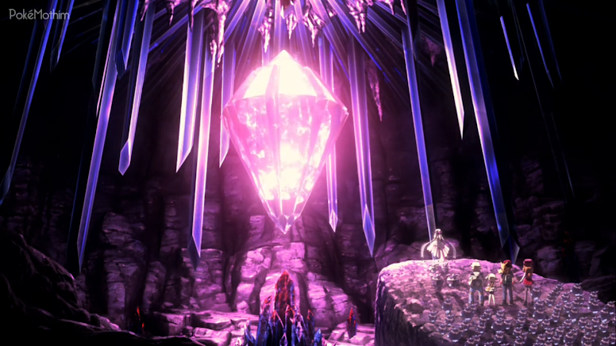

🟡 Nome Japonês: Pokémon the Movie XY: The Cocoon of Destruction and Diancie
🟡 Nome Americano: Pokémon the Movie: Diancie and the Cocoon of Destruction
🟡 Nome Brasileiro: Pokémon, o Filme: Diancie e o Casulo da Destruição
Data de lançamento:
🎞 Japão: 19 de julho de 2014
🎞 Estados Unidos: 08 de novembro de 2014
🎞 Brasil: 02 de agosto de 2015
Diferente dos outros longas da franquia, esse filme não começa com a
famigerada introdução falando sobre o mundo Pokémon. A introdução
conhecida é mostrada após uma longa sequência. Assim, o filme se
inicia com um misterioso lugar chamado de Domínio do Diamante - um
lugar cheio de cristais e diamantes e com a presença de alguns
Carbink. Os Carbink estão correndo atrás de Diancie - o único
Pokémon Mítico capaz de mega evoluir - que demonstra grande alegria
de estar ali com todos aqueles Pokémon.
Diancie é seguida por três Carbink que tentam alcançá-la para algo,
mas não conseguem. Então em um certo momento, vários Carbink ficam
ao redor de Diancie que é abordada por um ancião do local, Merrick,
que a repreende falando que ela, como Princesa daquele local,
precisa cumprir seu dever de criar o quanto antes um novo Diamante
Coração. Ele explica que um novo precisa ser criado para que o
antigo Diamante não desmorone e aquele lugar não desapareça. Na
tentativa de cumprir com seu dever, Diancie tenta criar um novo
Diamante naquele momento, mas não obtém sucesso, deixando-a triste.
Após essa sequência, o ancião começa a contar uma antiga história.
Ele conta que há algum tempo atrás, uma Floresta chamada Allearth
passou por uma grande catástrofe ocasionando sua destruição e
trazendo perigo a todos os Pokémon que viviam ali. Ele conta que o
lendário Pokémon Vida, Xerneas, apareceu e salvou todo o lugar da
destruição com sua poderosa Aura de Fada. O ancião conta que Diancie
pode contar com a ajuda da Aura de Fada emanada por Xerneas para que
ela obtenha poder suficiente na criação de um novo Diamante Coração.
Diancie então decide sair em busca de Xerneas para impedir que
aquele lugar que ela tanto gosta seja destruído.
Diancie sai do lugar em que estava e se vê em um mundo diferente do
que estava acostumada. Quando por fim a introdução sobre o mundo
Pokémon é mostrada, aparece uma batalha entre a campeã de Kalos,
Diantha, e sua Mega Gardevoir e o membro da Elite dos Quatro,
Wikstrom, e seu Mega Scizor. Em seguida Ash, Serena, Clemont e
Bonnie aparecem e uma batalha entre Ash e um treinador também é
mostrada. Nesse meio tempo, Diancie é perseguida por uma mulher,
Merilyn, e seu Delphox e um homem, Riot, e seu Greninja, mas é salva
por Ash e seus amigos.
Após salvar Diancie, Ash e os outros vão para um restaurante comer e
descansar um pouco. A Equipe Rocket, como sempre, observa-os com o
intuito de roubar Diancie, já que ela é capaz de criar diamantes. A
Equipe Rocket consegue pegá-la e levá-la para uma torre longe do
restaurante. Diancie percebe que eles são "ladrões" e que estão
atrás dela por causa do seu poder de criar diamantes, e ela por sua
vez diz que criará diamantes para eles, deixando-os surpresos.
Diancie então de boa vontade cria muitos diamantes e os entrega para
a Equipe Rocket. Após deixar a Equipe Rocket desfrutando daqueles
diamantes, Diancie tenta sair da torre, mas não consegue devido a
uma tranca na porta. Nesse momento, uma treinadora chamada Millis
aparece e pede que seu Chesnaught ajude Diancie a destrancar a porta
e em seguida pede que a siga.
Após sair da torre, Diance reencontra Ash e os outros e diz a eles
que os "ladrões" a deixaram ir embora depois que ela criou os
diamantes (nessa cena é mostrada a Equipe Rocket vendo os diamantes
desaparecendo, assim como Diancie já sabia que iria acontecer).
Diancie então conta para todos que depois que ela cria diamantes,
eles ligeiramente desaparecem e que ela precisa usar a Aura emanada
por Xerneas para que seu verdadeiro poder seja revelado e ela possa
criar diamantes verdadeiros. Todos então decidem ajudar Diancie a
encontrar Xerneas e assim concretizar seu desejo de usar sua Aura.
Em outra cena, Millis, que ajudou Diancie a sair da torre, entra em
uma grande nave aérea camuflada. Dentro dessa nave um homem observa
Merilyn, Riot e a Equipe Rocket e demonstra também algum tipo de
interesse em Diancie. Esse homem se chama Argus Steel e é pai de
Millis, que chega dizendo que conseguiu ajudar Diancie. Na cena
seguinte, Ash e os outros partem em uma viagem pela estrada em um
ônibus. Em seguida, eles viajam em um enorme barco, avistam Pokémon
aquáticos e se divertem com Diancie, que resolve criar um pequeno
diamante e dar de presente para Bonnie.
Após desembarcar, todos se encontram em um Shopping que Diancie
confunde com um castelo. Nesse momento, Serena e Bonnie levam
Diancie para fazer compras, já que ela, assim como algumas outras
coisas, não está habituada aos costumes humanos. Enquanto se
divertem provando algumas roupas em uma loja, Diancie avista os três
Carbink - que foram mostrados no início do filme correndo atrás dela
- que possivelmente vieram atrás dela por algum motivo, mas ela
rapidamente tenta se esquivar se escondendo e fugindo deles.
Enquanto foge dos Carbink, uma grande bagunça começa dentro do
Shopping, até que em um momento Diancie some para um outro andar,
levando Ash a enviar seu Hawlucha para ajudá-lo a salvar Diancie
daqueles Carbink.
Do lado de fora do Shopping, Diancie tenta explicar sobre os
Carbink, mas Merilyn surge gerando uma batalha Pokémon entre Ash e
seu Froakie e Pikachu contra o Delphox de Merilyn. Enquanto
batalham, Serena, Diancie e os outros fogem para um local em que há
vários Rhyhorn. Serena então sobe em um e pede para que todos façam
o mesmo na intenção de fugir dali. Rhyhorn então deixa todos no meio
de uma floresta, mas são surpreendidos por Riot e seu Greninja, que
também estava à espreita. Serena e Clement tentam batalhar e Ash
chega para reforçar a ajuda, porém sem sucesso, já que o Greninja
usou o Multiplicar enganando a todos. Ao tentar fugir, Diancie é
atacada por um dos Greninja criado pelo movimento Multiplicar, mas
os Carbink aparecem e a protegem do ataque. Diancie tenta revidar,
mas o seu ataque ainda não está firme o suficiente, fazendo com que
Greninja consiga pegá-la. Nesse momento, Millis aparece e pede que
seu Chesnaught use o Míssel de Espinho para atacar Greninja e
libertar Diancie. Após se soltar da língua de Greninja, Millis pede
que Diancie fuja dali com os outros.
Enquanto estão fugindo, os Carbink contam que só estão ali para
proteger Diancie enquanto ela ainda está à procura de Xerneas. Nesse
momento, é mostrado um flashback desde o dia em que Diancie saiu da
sua morada com os Carbink. Eles saíram em uma longa procura, mas
como Xerneas estava sempre em movimento, nunca foi possível saber de
fato o local onde estaria o Pokémon - o que acabou levando Diancie a
conhecer Ash e todos na cidade.
Diancie e os Carbink levam Ash e os outros para o Domínio do
Diamante e ao chegarem lá eles são surpreendidos pelos cristais, que
fazem parte do local, se quebrando com uma luz vermelha. Nesse
momento, o ancião Merrick aparece e diz para ela que a vida do
Diamante Coração chegou ao fim. Todo o lugar começa a ficar escuro e
Diancie explica que o Diamante Coração é a fonte de toda energia
presente no Reino, o Domínio do Diamante. O local continua a se
desfazer mais e mais, fazendo Diancie ficar triste e chorar, mas
logo é consolada por Ash - que diz a ela que eles vão ajudá-lo a
encontrar Xerneas.
Ao perceber uma forte Aura vindo de uma floresta próxima, Diancie
rapidamente corre em direção a ela, mas Merrick começa a contar que
ninguém pode ir pra lá. Ele diz que a razão pela qual a Floresta de
Allearth foi devastada no passado foi por conta do poder de Yveltal.
Yveltal é a personificação da destruição capaz de sugar a força
vital de tudo que está à sua volta e que após causar a catástrofe,
acabou se transformando em um enorme casulo que habita aquela
floresta. Por isso, ninguém pode entrar lá.
Mesmo com todos os avisos, todos decidem entrar em Allearth e tentar
achar de onde está vindo a Aura que Diancie está sentindo. Após
avistar Xerneas, todos saem atrás dela, já que ela está correndo
rapidamente. Após tropeçar em um galho de árvore, Diancie cai, mas é
resgatada por Xerneas. Diancie explica que finalmente a encontrou e
Xerneas diz que sabe o porquê ela está ali e que irá conceder seu
desejo. Xerneas então começa a usar a sua Aura de Fada, beneficiando
não só Diancie, mas também todos os Pokémon Fada que ali estão. Após
receber essa Aura, Merrick revela que finalmente Diancie poderá
criar um novo Diamante Coração e salvar seu reino da destruição.
Nesse momento, Millis e seu pai chegam e dizem que irão levar
Diancie. Eles revelam que ajudaram Diancie antes na esperança dela
conseguir a Aura de Xerneas e finalmente conseguir criar diamantes
de verdade e que querem usá-la para conseguir muitos desses
diamantes. Riot então aparece e consegue pegar Diancie, levando-a
para uma caverna muito escura no interior da floresta. Na caverna,
Merilyn também estava à espera de uma chance de pegar Diancie,
começando assim uma batalha entre os dois sem saber que aquele local
é onde o Casulo da Destruição de Yveltal está repousando. Durante a
batalha, muitos atingem a água do local, que começa a ficar negra,
fazendo com que o Casulo desperte de seu sono. É nesse momento que
Yveltal ressurge.
Yveltal começa a atacar todos que estão ali lançando um golpe capaz
de deixar os alvos imóveis transformados em pedra. Yveltal ataca
Riot, Merilyn e Millis enquanto eles tentavam fugir. Seus Pokémon
foram transformados em pedra enquanto Yveltal continuava lançando a
sua fúria. A Equipe Rocket tenta fugir, mas é transformada em pedra,
assim como Riot e Merilyn.
Ao chegar em Ash, que está com Diancie, Yveltal lança o seu poder,
mas rapidamente Diancie bloqueia com seu diamante - que mesmo com a
Aura de Xerneas ainda não foi suficiente para impedir. Yveltal
continua atacando e dessa vez os Carbink ficam na frente do ataque
do Pokémon, que também os faz virarem pedra.
Vendo todo estrago que Yveltal está causando, Diancie se lembra do
que Xerneas falou e passa a buscar todo seu poder interno, que faz
com que ela consiga megaevoluir.
Diancie consegue fazer um diamante para se proteger do ataque de
Yveltal e nesse momento a nave de Millis e seu pai aparece atacando
Yveltal como uma forma de agradecimento, mas o Pokémon é muito
poderoso e consegue atacar a nave e transformá-los em pedra também.
Quando Yveltal iria lançar seu último golpe contra Ash e os outros,
Xerneas aparece e contra ataca com um raio poderoso. Yveltal tenta
mais uma vez atacar, mas é impedido pelo ataque poderoso de Xerneas,
que também usa sua Aura para acalmar o Pokémon e fazê-lo parar.
Após acalmar Yveltal e conseguir cessar aquela guerra, a Aura de
Xerneas começa a reconstituir o local afetado pela fúria de Yveltal.
A água volta ao normal e tudo que estava parecendo sem vida começa a
viver novamente. Yveltal vai embora e Pikachu começa a virar pedra
devido a um ataque que o atingiu, mas Xerneas compartilha a sua
energia vital para trazer vida para todos que estavam petrificados.
Após ajudar a todos, o Pokémon decide adormecer naquele local e
começa a virar a uma árvore.
Na cena seguinte, Diancie usa todo seu poder para criar um novo Diamante Coração e finalmente restaurar seu reino para que ela e todos os Carbink possam viver felizes mais uma vez. Quando estão se despedindo, Dedenne sai da bolsa de Bonnie com o diamante que Diancie havia dado anteriormente e ali todos percebem que aquele diamante não se desfez igual aos outros. Bonnie então entrega-o para Diancie e diz que aquilo significará para sempre o símbolo da amizade de todos. E por fim, o filme termina com a imagem do diamante nas mãos de Diancie.
🟡 O diretor Kunihiko Yuyama viajou com Hideki Sonoda e Shinji Miyazaki para o Canadá para descobrir as locações do filme. Os produtores queriam incorporar elementos do cenário de rua ao estilo europeu com paisagens naturais intocáveis e grandes cidades, que eles pensavam estar presentes no Canadá. Eles também achavam que ter a natureza como pano de fundo melhor expressava o ciclo contínuo de vida e morte, representando Xerneas e Yveltal . Os locais que inspiraram os produtores incluíram as ruas de Ottawa e Stratford, bem como Cataratas do Niágara e Parque Nacional da Península de Bruce;
🟡 Este é o primeiro filme a ter seu título de dublagem em inglês revelado antes de seu lançamento em japonês;
🟡 Este filme tem mais antagonistas humanos do que qualquer outro filme, com quatro;
🟡 Esse é o único filme que não inclui um Pokémon com distribuição exclusiva por evento ou um Pokémon novo na trama;
🟡 Embora outros filmes tenham apresentado participações especiais de Campeões Pokémon e Cérebros da Fronteira, este é o primeiro filme que apresenta uma participação especial de um membro da Elite dos Quatro;
🟡 Este é o primeiro filme em que Ash e seus amigos encontram a Equipe Rocket desde Giratina e o Guerreiro do Céu, que também foi lançado em 19 de julho, coincidentemente;
🟡 Argus Steel menciona que os chocolates que ele comia na cena do dirigível foram importados da região de Hoenn.